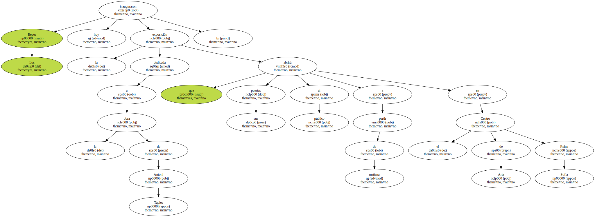
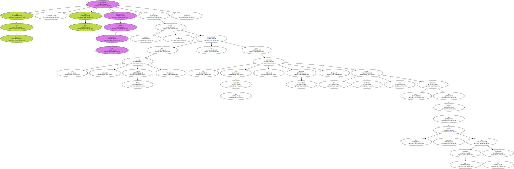
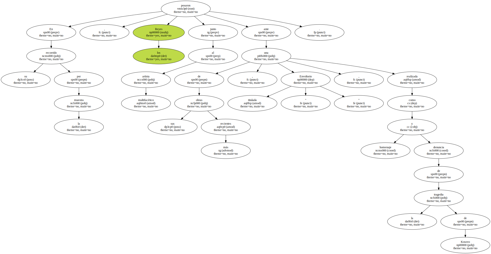
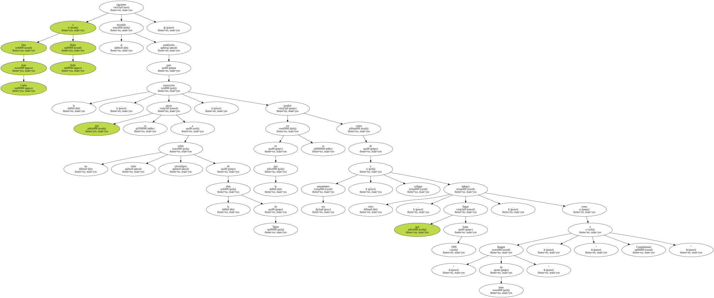
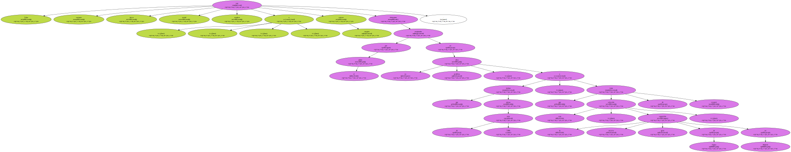

Los Reyes inauguraron hoy la exposición dedicada a la obra de Antoni Tápies que abrirá sus puertas al público a partir de mañana en el Centro de Arte Reina Sofía.
Don Juan Carlos y Doña Sofía recibieron información sobre la muestra del propio artista , acompañado por su esposa , Teresa Barba , y por el comisario de la exposición , Manuel Borja-Villel , que también les explicó los pormenores de algunas de las noventa obras que ha reunido la exposición.
En la inauguración estuvieron presentes el ministro de Cultura , Mariano Rajoy , el secretario de Estado de Cultura , Miguel Angel Cortés , y el vicepresidente de la Caja de Ahorros del Mediterráneo , Javier Guillamón , que patrocina esta antológica que recoge cincuenta años de pintura de Tápies.

En su recorrido por la muestra , los Reyes posaron junto al multifacético artista ante una de sus obras más recientes , titulada " Envoltorio " , realizada como homenaje y denuncia de la tragedia de Kosovo.
Don Juan Carlos y Doña Sofía siguieron el recorrido establecido para la exposición , que se ajusta a un cierto orden cronológico de la obra de Tápies , en la que se pueden ver varios de sus autorretratos , collages y otros trabajos , que llegan hasta 1999 , como " Imagen de tierra " , o " Complemento ".
Telas , cartones , tierra metal , madera , o simples esteras son elementos empleados por el pintor en su prolífica obra , que incluye más de 7.000 piezas , y que esta selección , la tercera gran exposición de Tápies en Madrid , trata de resumir.
